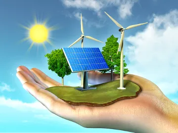

Sustentabilidade é a capacidade de sustentação ou conservação de um processo, ou sistema. E também a maneira como se deve agir em relação à natureza. Para que a sustentabilidade de fato aconteça é preciso que haja o chamado tripé da sustentabilidade, constituído por três princípios: o social, o ambiental e o econômico.
A sustentabilidade é a capacidade de manter-se. Quando utilizamos os recursos naturais de maneira sustentável, por exemplo, eles conseguem manter-se por vários anos, não se esgotando facilmente. Percebemos, portanto, que um desenvolvimento sustentável é aquele que não provoca a escassez ou esgotamento de recursos e permite que estes atendam as necessidades das futuras gerações e também as nossas.
